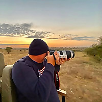

Welcome
'Safari' means 'journey', and the word itself has travelled – first from the Arabic safar and safariya, through to the Swahili safari. This East African word has come to define the ultimate African holiday as we know it today, and conjures up images of khaki-clad travellers in the savannah, wielding binoculars and cameras, clambering in and out of dusty jeeps and settling down into robust tents, adorned with classic African artefacts.
A walking safari brings you up close to Africa – on its own terms. Your guide can show you how to track wildlife, and you’ll discover the savannah and desert ecosystems. Meeting animals on foot commands a serious amount of respect! Senses are awakened, as is the focus on small details so often lost in a jeep; footprints, insects and curious plants all take on a significance of their own.
Our Features
Videos
Videos and Photos speaks more than a paragraph of text so we provide the rarest videos of the Safari
Photos
We Provide the heavenly nature photos of African Safari which are pleasantful with the user experience
Virtual Experience
This website is used for the user to experience the African safari virtually with upto date Information
Location
Our Team Provides exact location of the places you are searching with the latest news about the destination
Services

Guidance
A local guide can make all the difference to your safari. Whether an indigenous Maasai or San guide – who can teach you the secrets of the savannah as well as tracking wildlife – or a qualified local villager looking to welcome travellers to his country, keeping it local is one of the most interesting ways to go on safari, and the most beneficial for local people and wildlife.
Mobile Tents
A super luxury lodge will make you feel like royalty while on safari. However, being surrounded by grand pianos, Persian rugs and popping champagne corks will distance you from your real surroundings. Impressive as these desert 'palaces' may be, it’s a real shame to miss out on connecting with Africa. What could you watch on your huge TV that could be more astounding than the Africa.
Animal Care
Animals must be provided water, food, proper handling, health care, and an environment appropriate to their care and use, with thoughtful consideration for their species-typical biology and behavior.Procedures related to animal housing, management, care are taken care by our volunteer groups.Animals should be cared for in ways that minimize fear, pain, stress, and suffering.
Testimonals

Blogger
My name is John Finch, and I am going to be your Safari designer. I grew up in Arusha, Tanzania, the gateway town for Safaris to Northern Tanzania. Going on Safari to Serengeti National Park, Tarangire and Ngorongoro Crater was the norm in my childhood. That sparked my love of wildlife. Upon finishing high-school in Tanzania, I moved to Texas to earn my degree from Trinity University. After graduating and working at a freight forwarding company, I realized sharing the beauty of Tanzania is what gave me goosebumps. That was 20 years ago when Journey To Africa was created.